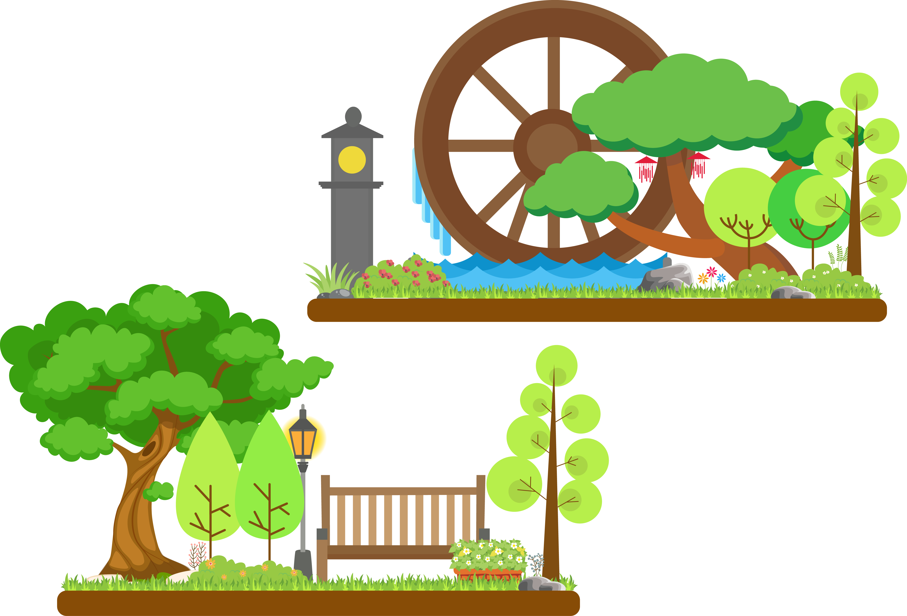

The final report is a scholarly work contains the result of background research, the personal contribution and the reflection.
The aim of this project is to design an interactive installation in everyday life and give a solution of problems existed in the targeted area. The team mainly focus on the “healthy aging” and “playful work.” As the research, the team found the inactive and sedentary behavior have enormously adverse effects on the office worker, which includes the physical and mental healthy issues. (Hoare et al., 2016) We expected raise people’s awareness of doing some exercises frequently in the office during the working time by interacting with the product. For creating a healthy working environment, we encourage people to stand up and move around in the office to reduce the risk of sedentary behavior as well as release the mental stress. We also want to introduce a brand new way to attract office workers to join the exercise which is in a game mode. The main purpose of this project is to reduce the risk health risk which caused by the sedentary behavior of office workers and help them release the stress at the same time.
The Breakfree is an exercise system which provides a new and innovative way of addressing the existed issue. With this system, users interact by hand gesture and body movement to collect the icons on the screen and put it in the allocated box. The system could be used for maximum two people. The team also encourage the collaboration during the play. When two people use it, the team expect on user collect the useless icons and clear the path for another player. Some communications and collaborations occur during the play, as well as we believe the ability of teamwork between the office worker could be improved by interacting with the Breakfree system.
The system will be placed in an office environment like the meeting room where people feel free to exercises. Obviously, the main target audience of this project is office workers. The team is also looking forward to implementing the system for the people who have same inactive problems, like the retail worker and call center workers.
All related researches did before generating the idea, and the team got some inspirations from existed project to create a better concept and provide more interactive experience. Following the background survey, the report will give a detailed description of the design concept the team created, who is the target users and the technology that the team implemented, as well as the user testing process. Another important aspect that the report focuses on is my responsibility in the group and my contribution to the team project.
I was one of the designers in the team, and my contribution includes user interface design of the game and graphic design of flyer, as well as the video producing.
Our previous concept was like an office garden, which detects user’s gesture and body movements to create an immersive green environment in the office. I designed a garden background with Illustrator which integrate some elements of Japanese Zen garden include the stylized landscape, rocks, and water feature. One of the most significant features of Zen garden is the stress release, people feel relax and peaceful by surrounded the green plants and natural view.

The main target audience of this project is the office workers. To response the theme, I strongly suggest the user interface design of our final concepts has office elements. The audiences could see all icons are used in the Breakfree are common and annoying items found in the office, like email, documents, PowerPoint and more. It allows the users to collect them and drag it into the collection box which will act as a cure for stress release.
I was responsible for the flyer at the beginning with our original idea. I choose yellow and black which has sharp contrast as the theme color of this flyer. This flyer contains the problem statement and basic design concept of the product. Also, I introduce how to interact with the Breakfree system and the technology implemented on it. However, as the concept improve, this flyer was abandoned.
Another thing that I worked on was the effect making and video producing. The team planned to add a smoke text effect when the user finishes the game to the popularize the damages of sedentary behavior. The text effect was made according to a YouTube tutorial. The video could be divided into two parts, the animation, and real action. The animation was made by an online tool called Animatemaker. For action part, I wrote a script before the team started shooting the video and I found that a prior script is helpful for subsequent work to include recording voice over and making subtitles.
Before the final concept came up, the team did a lot of researches on the common problems in the office. We found that the inactive and sedentary behavior has become the “normal life” of office workers. The background researchers below which related sedentary behavior and exercise in the office helped the team to generate the design concepts.
SEDENTARY BEHAVIOR
Sedentary behavior is used to describe the people who spend lots of time sitting or lying down. In recent year, the sedentary behavior has become a prevent problems in office workers. The British Heart Foundation(BHF) found that 37% of male employees and 45% of female workers spend less than 30 minutes to stand up or walk around on a business day. The long time sitting at work has the adverse effect on office worker’s health (Bhf.org.uk, 2017). Sitting for six hours a day is equivalent to smoking of a package of cigarette (Sharecare, 2017). The dangers of sedentary behavior include obesity (Reilly, 2008), type 2 diabetes, heart diseases (Wilmot et al., 2012) and mental issue (Teychenne, Ball, and Salmon, 2010). To reduce the risk of chronic diseases related to sedentary behavior, some occupational interventions are urgently needed (Clemes, OʼConnell,and Edwardson, 2014).
The negative health effect caused by sedentary behavior was the problem statement of this project. The team aimed to give an effective solution to reduce the risk of inactivity by encouraging users to do some stretches and exercises. “Sitting is the new smoking, and Breakfree is the solution” became the slogan of this project.
TAI CHI
In the Breakfree system, we didn’t encourage users any extreme exercises as we were aware that the professional supervision would be required in that case. The inspiration for our exercises moves from Tai Chi. We expected users to stretch themselves in a safe and gentle way.
Tai Chi is always considered as a helpful way for the health of mind and body. The research shows that Tai Chi could be an effective way to improve cardiorespiratory in adults (Zheng et al., 2015). Also, with the practice of Tai Chi, a sharp reduction of stress-associated substances could be seen (Rosado-Pérez et al., 2012). We expected office workers to finish some Tai Chi movements during the gameplay, which aim to improve the physical health and release the mental stress.
The main purpose of this project is to reduce the health risk of sedentary behavior and help office worker release stress. Success criteria of this project contain two part. The first one is user have interests and are willing to join the system. Ensuring the system is attractive the primary requirement. Some other goals will only be possible if users are aware of the installation is fun and join it. Other criteria are user felt relax and satisfactory after interacting with the system, which is the main purpose of the project. We made a questionnaire and invited the user to fill it after they experienced with the system.
In the exhibition, visitors showed keen interests with the Breakfree system, and almost all of them participated in with great enthusiasm. It means the Breakfree system is attractive for the users and the interactive method is acceptable. According to the result of the questionnaire (Figure 2), most of the user gave a high appraisal of the project, and they reported they felt relax during the play. The team gladded to see those results because that means the Breakfree system meet the success criteria. 


By creating this project, the importance of user testing was emphasized again. When the team finishes the first version of this project, the team invited some others users to test the system. However, the testing result is unsatisfactory. Some testers report that they have no idea what to do and the interaction process made them feel frustrated. Based on user’s feedback, the team change the background color and change the design of icons to keep the UI tidy and readable. The team used to provide an instruction before the game start, but we found that none of the users have the patience to read all the text. Hence we simplified the instruction into three sentences. The improvements of the project after user testing made good progress. Based on user feedback for final production, the problems existed before are solved.
OUTCOMES
The Breakfree system is an interactive installation which encourages office workers to do some exercises and stretches rather than sitting for a long time. The team expected the dangers of inactivity could be reduced and even eliminated by interacting with this system. Based on the user feedback of the final product, most of them felt satisfactory and have interests to interact with the system. The success criteria of this project are to compel the users and encourage them to join the exercise. Hence I believe the project met the criteria.
QUESTIONS HAVE BEEN ADDRESSED
The sedentary behavior and inactivity have become one of the biggest problems in office worker’s health. Providing a compelling way to attract office workers to voluntarily join the game which helps them to stretch themselves and release the stress was the main purpose of this project. The team combine the game and stretch, as well as introduce a creative interact mode into the office. The user interfaces design response the theme of the game and the color scheme was chosen carefully. Let users collect the annoying icons in the office like email and documents with Tai Chi movement, as well as ensuring users stretch themselves during the joyful gameplay. As the feedback, most of the users felt relax and satisfactory, which achieved our purpose. The team believes, the Breakfree system could be an effective solution to sedentary behavior in the office.
FURTHER PLAN
Some users gave us some helpful suggestions about how to improve the Breakfree system in the future. One of the users suggests we could add some real Tai Chi movement in the game and give an instruction to help the user to finish that. Also, adding some gestures include catch and release. When the user wants to collect the specific icon, they need to grip the hand and loosen the grip to put the icons down. It will improve the accuracy of the system, as well as the process of grip and loosen the grip could be considered as a stress release way.
1. Hoare, E., Milton, K., Foster, C. and Allender, S. (2016). The associations between sedentary behaviour and mental health among adolescents: a systematic review. International Journal of Behavioral Nutrition and Physical Activity, 13(1).
2. Bhf.org.uk. (2017). Office workers fear sitting too long could be impacting their health. [online] Available at: https://www.bhf.org.uk/news-from-the-bhf/news-archive/2015/march/on-your-feet-britain [Accessed 4 Jun. 2017].
3. Sharecare. (2017). The Major Health Risk You Take Every Day. [online] Available at: https://www.sharecare.com/health/health-care-basics/article/the-major-health-risk-you-take-every-day [Accessed 4 Jun. 2017].
4. Reilly, J. (2008). Physical activity, sedentary behaviour and energy balance in the preschool child: opportunities for early obesity prevention. Proceedings of the Nutrition Society, 67(03), pp.317-325.
5. Wilmot, E., Edwardson, C., Achana, F., Davies, M., Gorely, T., Gray, L., Khunti, K., Yates, T. and Biddle, S. (2012). Sedentary time in adults and the association with diabetes, cardiovascular disease and death: systematic review and meta-analysis. Diabetologia, 55(11), pp.2895-2905.
6. Teychenne, M., Ball, K. and Salmon, J. (2010). Sedentary Behavior and Depression Among Adults: A Review. International Journal of Behavioral Medicine, 17(4), pp.246-254.
7. Clemes, S., OʼConnell, S. and Edwardson, C. (2014). Office Workersʼ Objectively Measured Sedentary Behavior and Physical Activity During and Outside Working Hours. Journal of Occupational and Environmental Medicine, 56(3), pp.298-303.
8. Zheng, G., Li, S., Huang, M., Liu, F., Tao, J. and Chen, L. (2015). The Effect of Tai Chi Training on Cardiorespiratory Fitness in Healthy Adults: A Systematic Review and Meta-Analysis. PLOS ONE, 10(2), p.e0117360.
9. Rosado-Pérez, J., Santiago-Osorio, E., Ortiz, R. and Mendoza-Núñez, V. (2012). Tai Chi diminishes oxidative stress in Mexican older adults. The journal of nutrition, health & aging, 16(7), pp.642-646.